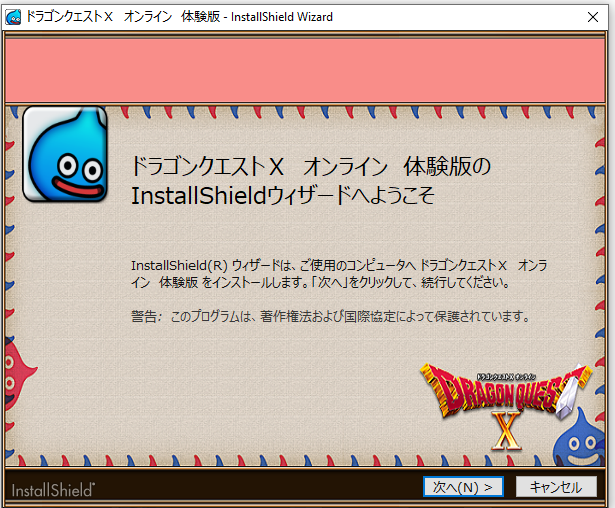

This page contains a compilation of frequently asked questions pertaining to both Dragon Quest X's setup (Installation and Utilities) as well as common questions about the game itself. The FAQ in it's majority was created by ShobuBlaze, and new information will be added to this page as it becomes pertinent.
Information is subject to change as the game and the sites become updated.
-
General FAQ
-
Setup FAQ
-
In-Game FAQ
Frequently Asked Question topics:
General FAQ
What is Dragon Quest X?
Dragon Quest X is the 10th mainline (yes, mainline) game
in the Dragon Quest series. As of 2012, it has been
released in Japan (and China, for a short time) to
various platforms and devices. The obvious difference
from the other 10 mainline games as of this writing,
however, is that it is a full-fledged MMORPG. However,
do not let this dissuade you. This game still is, and
feels very much like, a traditional Dragon Quest
experience. The MMO elements serve to enhance that
experience, rather than to water them down.
How can I play it and what platforms are available?
If you are living in the US, you simply need to download
the game on one of its available platforms, no VPN is
required. If you are not in the US, you will need to
connect to the game on the platform of your choice with
a VPN. There are many guides and tutorials on how to set
one up to your platform of choice.
The currently supported platforms are Wii U, Nintendo
Switch, PS4/5, and PC.
The game supports an unlimited free trial, with some
restrictions: the main one being that you cannot advance
past the end of the first expansion. If you’d like to
experience the entire game, you must eventually purchase
and subscribe to it.
Can I play in English?
Currently the PC version has an ongoing project of
translating the in-game UI/menus and a program that
allows for machine translation of dialogue. If you do
not have access to the PC version, there are alternative
options such as using something like Google Lens on your
smartphone to translate on screen text through your
phone’s camera. No translation is planned for the non-PC
versions and most likely never will be.
So how can I get started?
If you're on PC, this site has an excellent guide under
"Getting Started". If you're on other platforms, the
Ethene Wiki has a great
Free Trial Setup Guide here.
Setup FAQ
Where can I get the game?
For general download and installation instructions,
please make sure to follow the guide we have hosted here
on the site.
Here's a link to it.
If there are any other pressing questions people have
frequently about this process those questions will be
added here under this heading. Luckily, it seems simple
enough ;)
I can't change the installation directory?
If you're just now installing the game for the first
time and you find there's no installation directory on
the main installer (pictured below):

Don't worry, just proceed with the installation until
you get to the following installer:

As you can see, the installation directory for the game
can be changed here.
I get an error code when launching into the game?
If this is your error code:
Your IP address isn't located in the United States or
Japan. You'll need a VPN.
In-Game FAQ
What race/class should I pick?
At the beginning of character creation, you create a
human character to go through a short offline prologue
sequence. Once you finish that, you are able to choose a
race and a starting class. There are no statistical
differences between races, so choose whatever you like
best. As for starting class, that is also up to personal
preference, as you are able to switch classes very early
in the game. After choosing your race and class, you
begin the first part of the main story in the online
mode.
What should I be doing when I start the online mode?
As a new player, you should mainly focus on clearing the
main story and unlocking different facilities. When you
open your menu, you’ll see a box underneath that says
“Walkthrough/冒険ガイド”. This will direct you to your
next objective. However, this will *not* always be a
story quest, especially in the beginning. It may be an
important facility unlock quest. I suggest following it
even if it is not a main story quest. I’ve listed below
a few helpful links to help with these quests.
-
Main Story Guide: Use this for anything related to the main story of the game.
-
Useful Quests: This is a list of useful facility unlocks for your character, such as the class change priest, tavern, and item bag expansion.
-
Quest List: Use this to see a walkthrough of any numbered quest in the game.
-
Vocations: This is a page of all the vocations and how to unlock each one.
-
Metal Slime Time: New players can access the new player servers (servers 9 and 10), which has a special event every 5 hours called Metal Slime Time. Metal Slimes will spawn in any encounter for 30 minutes during this time, so it’s useful for quickly leveling up new classes you want to try. You can get pings whenever it starts by getting the metal slime time role in #roles. The schedule is also listed here.
The Walkthrough/冒険のガイド isn’t showing my story
quest, can I change it?
No, you cannot. However you can view the progress of
whatever story you are currently progressing at any
time.
Simply open the menu and go to Records/せんれき, then
The Story So Far/これまでのおはなし, and then choose whatever story you are currently
progressing. There will be a button you can press that
shows your next destination.
This quest is asking me to say something in chat--
If you are a trial player, you
cannot use Public/Nearby chat, meaning
these quests cannot be completed. Unfortunately
you will have to ignore them for now.
If you are a full player, there are several ways to do
this. The first method is to
install a Japanese IME keyboard . You
will also need to
download and launch the game via Locale Emulator
(download with instructions
here).
This will assume you know how to type in Japanese with
romaji.
If this sounds too daunting, you head to your
frequently used lines page on the official DQX
website.
This allows you to edit your frequent phrases (accessed
by holding B in game) and can simply paste the phrase
you need as a frequent phrase.
My level is capped, how do I uncap it?
Beginning at level 50, you will need to intermittently
clear level cap quests to raise your overall level cap.
Don’t worry, you only need to do it once, all of your
vocations will have their caps increased. A list of
level cap quests and their level requirements can be
found
here.
Why are my stats so low compared to other players? How
can I raise my stats?
Leveling more than one vocation has its benefits! Each
class has its own distinct vocation tree (for example,
Warrior has the “Courage” skill tree) that is always
located at the bottom of their skill tree list.
Allocating points into these will grant passive stat
bonuses that look something like “Natural HP + 10”.
These stat bonuses affect all vocations, not just the
vocation you learned it on. As a new player, it’s highly
recommended to take advantage of Metal Slime Time
(described above) to level up additional vocations to
around level 30, as this is usually a high enough level
to gain enough skill points to learn all of the “Natural
Stat” skills for a vocation.
Is there crafting in this game? Can I have all
crafting jobs at once?
Unlike FFXIV where you can do every single crafting job
on a single character, DQX only allows
one crafting job per character. You’re
allowed to try each crafting job up to level 10, but
once you complete a job’s initiation quest, you will be
locked into that craft (with an option to reset to a
different one, but it is costly.)
As a trial player, you may only reach level 9 with a
craft, so you cannot lock into one.
Where can I find better weapons/gear?
Unfortunately, unlike most other DQ games, you
won’t be relying on in-game shops for
the newest weapons and armor.
Weapons and armor bought from shops only go up to
level 35 , so you’ll have to find alternative methods
afterwards. You’ll either have to rely on the
Traveler’s Bazaar (this game’s
version of the Auction House),
crafting, or
monster drops.
As a trial player, you cannot access the Traveler’s
Bazaar and you are very limited on crafting, so you
must rely on monster drops.
At lower levels, gear isn’t as necessary as it becomes
at higher levels. I would shoot for upgrading gear every
15-20 levels. A good resource to find gear would be
here. You can
see which monsters drop the gear you’re looking for, if
any.
If no monster is listed, that means it is craftable
only.
You can try to find a nice person to buy one off the
Bazaar for you and mail it to you, if they’re willing.
What about accessories?
Again, accessories don’t matter as much in the early
game as they do in the late game. There are a few decent
starter accessories you can get from the accessory shop
in Verinard and the Mini Medal vendor in Luckland. If
you really want to target accessories, you can search
them
here and
see which bosses drop them. After that, it’s just a
matter of collecting the necessary boss cards and using
them in the Magic Maze.